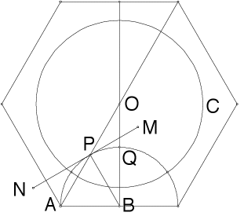

Step 2, proof
|  |
| Showinf angle OPM = 30 deg. |
| In the Euclidean triangle ABO, |
| The segment OB is perpendicular to AB, so |
| The segment MN is tangent to U at P, so |
| The segments AB and PB are radii of the circle U, so triangle ABP is isosceles. | Consequently, |
| Combining |
| But |
| Finally, since MN is tangent to U at P, |
| We have constructed the hyperbolic triangle OPQ with angles 30, 30, and 90. |
Return to Step 2.